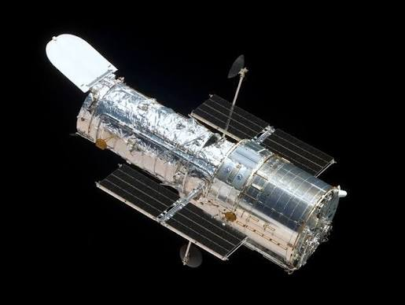
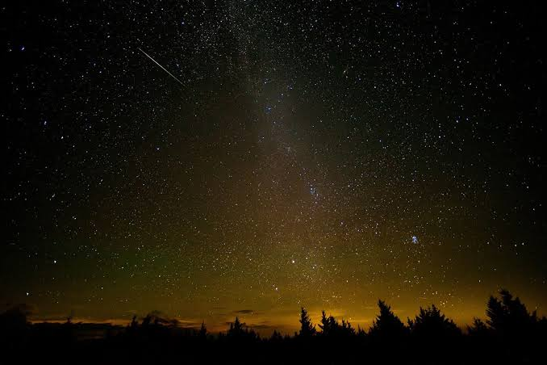

Objetivo general
Analizar las tecnologías de observación estelar a través de un estudio comparativo de telescopios terrestres, espaciales y métodos astrofísicos para establecer su contribución a los avances y hallazgos en la astrofísica moderna.
¿Y si pudieras observar los secretos más profundos del universo sin salir de la Tierra? Desde los telescopios terrestres hasta los observatorios espaciales, descubre cómo la tecnología nos permite explorar estrellas, galaxias y fenómenos que desafían nuestra imaginación.
Comenzar exploración →La observación estelar es una de las principales formas que tiene el ser humano de explorar y comprender el universo. Gracias a la tecnología, hoy contamos con instrumentos como los telescopios terrestres y espaciales, que nos permiten observar estrellas, planetas, galaxias y otros cuerpos celestes, incluso aquellos que se encuentran a millones de años luz de distancia.
La importancia de estas tecnologías radica en que nos ayudan a descubrir cómo funciona el universo, estudiar su origen y evolución, e investigar fenómenos astronómicos que todavía representan grandes misterios para la ciencia. Además, los avances en los instrumentos de observación han permitido obtener imágenes y datos cada vez más precisos del espacio.
En esta página encontrarás información sobre los diferentes tipos de telescopios terrestres y espaciales, sus características, diferencias y aportes a la astronomía. También conocerás las principales técnicas de observación astronómica y cómo estas herramientas han transformado nuestra manera de explorar y entender el universo.
Analizar las tecnologías de observación estelar a través de un estudio comparativo de telescopios terrestres, espaciales y métodos astrofísicos para establecer su contribución a los avances y hallazgos en la astrofísica moderna.
Diferenciar las capacidades operativas, ventajas, desventajas y limitaciones de los telescopios terrestres y espaciales en el análisis de los cuerpos celestes.
Explicar los principios de funcionamiento de la fotometría, espectroscopia e interferometría, precisando la información astrofísica que aporta cada técnica a nuevos descubrimientos.
Los telescopios son instrumentos que permiten observar objetos celestes muy lejanos. Los terrestres se encuentran en la superficie de la Tierra, mientras que los espaciales orbitan fuera de la atmósfera, logrando captar imágenes con mayor claridad en ciertas longitudes de onda.

La astronomía utiliza diferentes técnicas para estudiar el universo, como la observación mediante luz visible, infrarroja y ondas de radio. Estas permiten captar información de los cuerpos celestes, analizar su composición, temperatura, distancia y movimiento.

Permite medir el brillo de los objetos celestes y estudiar sus variaciones de luminosidad.
Analiza la luz de los cuerpos celestes para obtener información sobre su composición y características.
Combina señales de diferentes instrumentos para obtener información astronómica con mayor resolución.
13.800 millones de años
Es la edad aproximada del universo, cuyo estudio es posible gracias a los avances en la observación astronómica.
Durante la presentación del proyecto final se busca comparar diferentes tecnologías de observación estelar por medio de una simulación virtual que permita reconocer algunos de los componentes utilizados en los telescopios.
Explorar NASA Eyes on Asteroids →Selecciona una condición para observar cómo cambia la imagen.